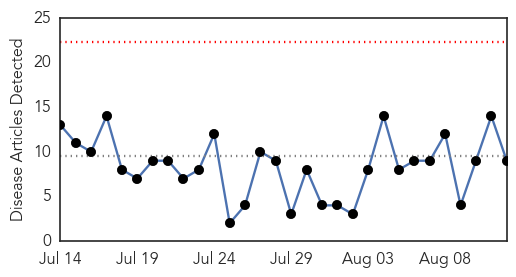
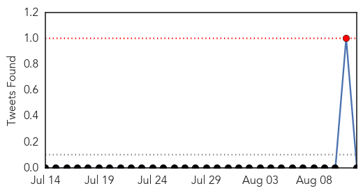

30 Day Trends
Web: 0 alerts, 0 warnings
Twitter: 0 alerts, 0 warnings
Top Articles:
- 0.997
- Record dengue outbreak fans fears in Malaysia
- 0.957
- 3 dengue patients arrive in two Rawalpindi hospitals
- 0.847
- Baguio Midland Courier Website
- 0.833
- Can America cope with a resurgence of tropical disease?
- 0.752
- Company on anti-dengue roadshow - Community
- 0.729
- Dengue rife, malaria spreading in filthy streets of Yemen: charity
- 0.690
- Care home workers face abuse charges if they discuss Coventry council closures …
- 0.689
- Delhi Bans Sale of Aspirin, Ibuprofen Without Prescription
- 0.522
- Dengue rife, malaria spreading in filthy streets of Yemen
Top Tweets:
-
No tweets found for Aug 12, 2015
Web/News Articles
Tweets
Article Locations
Article Confidences